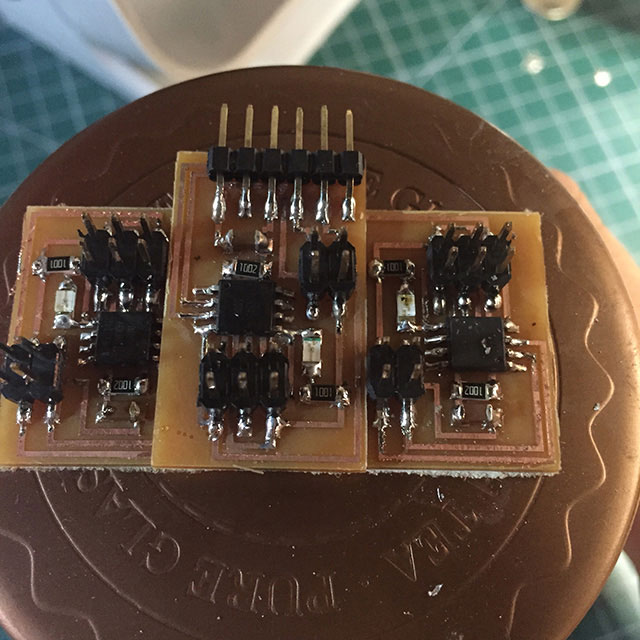
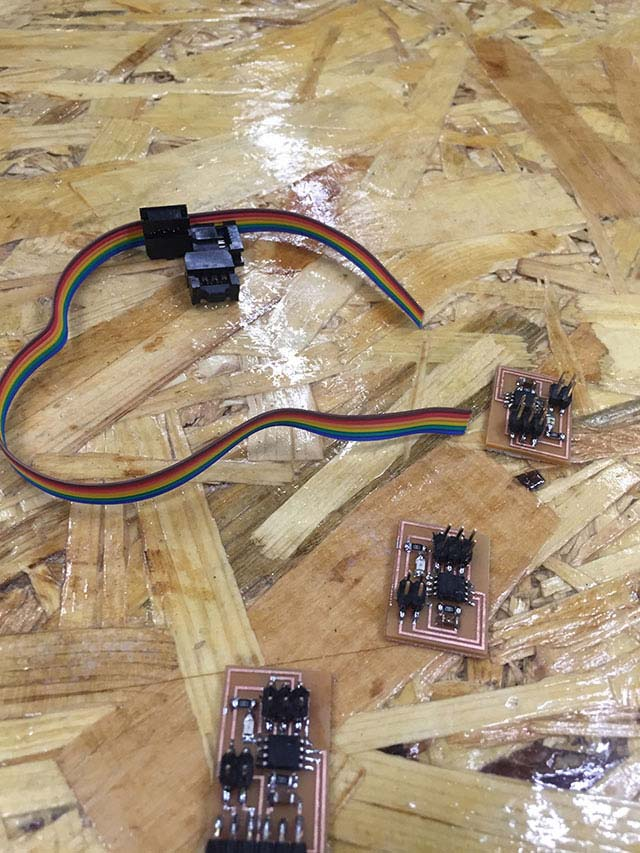
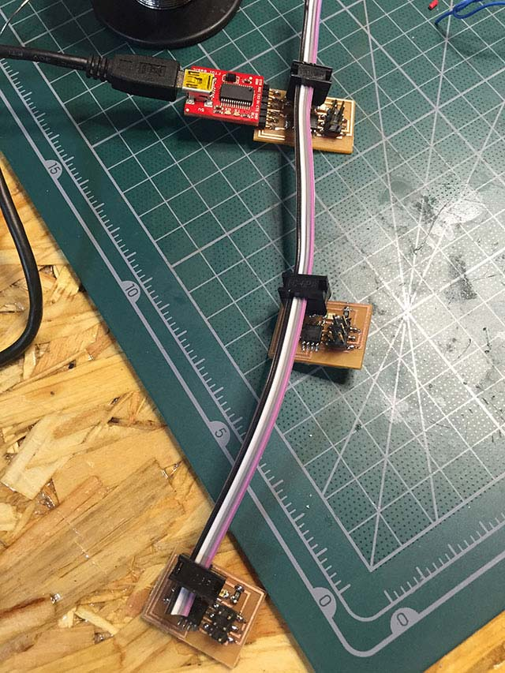
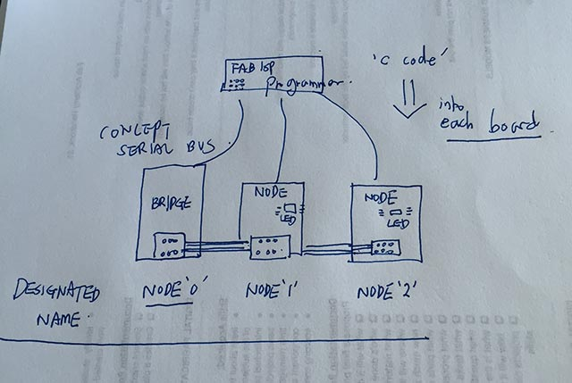
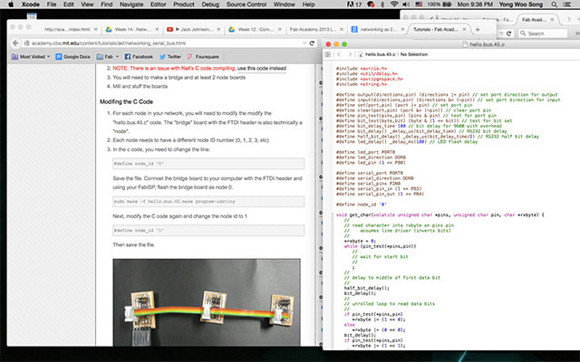
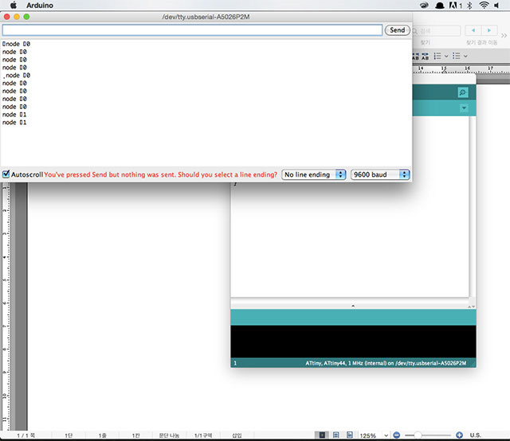

13. Network and communication
Design and build a wired &/or wireless network connecting at least two processors
Hello Serial Bus Trial
First I wanted to try Neil’s board in order to find out how board and node is working between two connections. As my FabISP was fixed just this week, i think i’ll be able to use my own FabISP this time. This week is about networking and to do it, I've made 2 nodes and 1 bridge to test the node blinking. [serial bus networking]
 |
 |
 |
CHECKING THE BOARD |
USING 4 PIN HEADER |
FTDI CONNECTED |
Looking at the reference done at the AS220 labs in 2012 I tried the Hello.serial bus and before modifying it I first wanted to check if it works as a bridge and nodes. Strangely enough even though the connection is well connected it acted different
Programming
-
#define node_id ‘0’ // change the node id to ‘1’, ‘2’ for the connected nodes
-
sudo make -f hello.bus.45.make program-usbtiny
 |
 |
 |
UNDERSTANDING NETWORK |
DESIGNATE THE NODE NUMBER |
CHECKING RESULT ON ARDUINO IDE |
What I did and what i learned ....
I’ve changed the node for all three boards and make sure it’s in line. Bridge as ‘0’ , node 1 as ‘1’ and node 2 as ‘2’ and wired all in one connection and made sure the GND and VCC is in same location.Basically the whole idea is when press the '0' the whole board blinks and when '1' and '2' are put into serial monitor designated node blinks. What I learned from this assignment was that I can now designate as many boards that i want and transmit/receive the data. What I haven't done yet to success is coding the c code for chaning the sequence of LED blinking.
Failure : shortage ? mysteryI’m still not sure what made a problem about connecting the board with computer, after shutting down the laptop about five times, and adjusting connection by hand. Suddenly out of nowhere, it works and I still don’t find why it works. (I’ve made a new board and replaced the components to recycle it). I
After several trial and changing usb cable and FTDI connectors I’ve managed to make the node to blink. Still wondering what was the problem before.
(Video : working on hello serial bus)
Adding some touch sensor is what I’m trying to do for later on. Therefore, in my imagination I may be ready to send signal from customized touchpad on my own to the final destination that i want or something much more far. To sum up, python coding is one of the disaster that can happen to non-programmer knowledge background. Reason why I think is difficult is that Python is so stablized that It's not easy to change settings or coding the way I want. It happens all the time every time I change the code It gives me the serious error message. Therefore in the future, I may have learn every single detail of python that I need for the future .
FURTHER TRIAL WITH ELECTRONICS
For catching up the assignment for evaluation I've tried with the redesigning of networking bridge board. On links to download below there are two different boards with artwork of my own